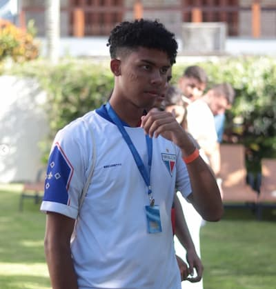

Matheus dos Santos Nogueira | WDD 130

Olá! Meu nome é Matheus dos Santos Nogueira, sou de Santa Catarina e estou estudando Desenvolvimento de Software. Gosto de futebol, programação e paleontologia

Olá! Meu nome é Matheus dos Santos Nogueira, sou de Santa Catarina e estou estudando Desenvolvimento de Software. Gosto de futebol, programação e paleontologia